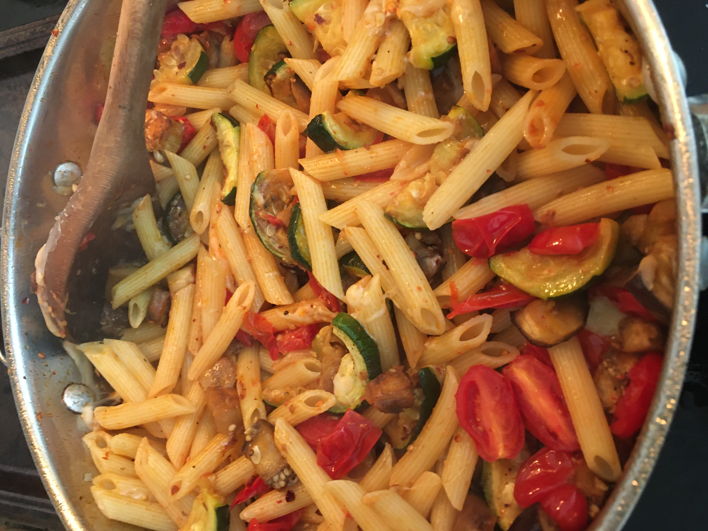

back
Garlic and veggie penne

Description
Roasted garlic and fresh veggies give this pasta a fresh taste.
Ingredients
- One tablespoon of olive oil
- One bulb of pre-roasted garlic (see Step 1)
- One medium zucchini, sliced into coins
- One small eggplant, cut into small cubes
- A handful of cherry or grape tomatoes, sliced in halves
- Half a pound of penne
- A good amount of shredded parmesan cheese
- Oregano
- Salt and pepper
Steps
- Pre-roast the garlic ahead of time for an hour at 450 degrees. Remove garlic from bulb.
- Boil water for the pasta. Cook the pasta.
- While pasta is cooking, saute the eggplant until mostly soft.
- Add the zucchini and continue sauteeing at high heat until both vegetables are soft.
- Add the oregano, tomatoes, salt and pepper and cook for another minute.
- Add the cooked pasta and garlic. Cook for another minute, stirring the whole time.
- Add the parmesan cheese and stir in. Cook for another minute.
- Serve.